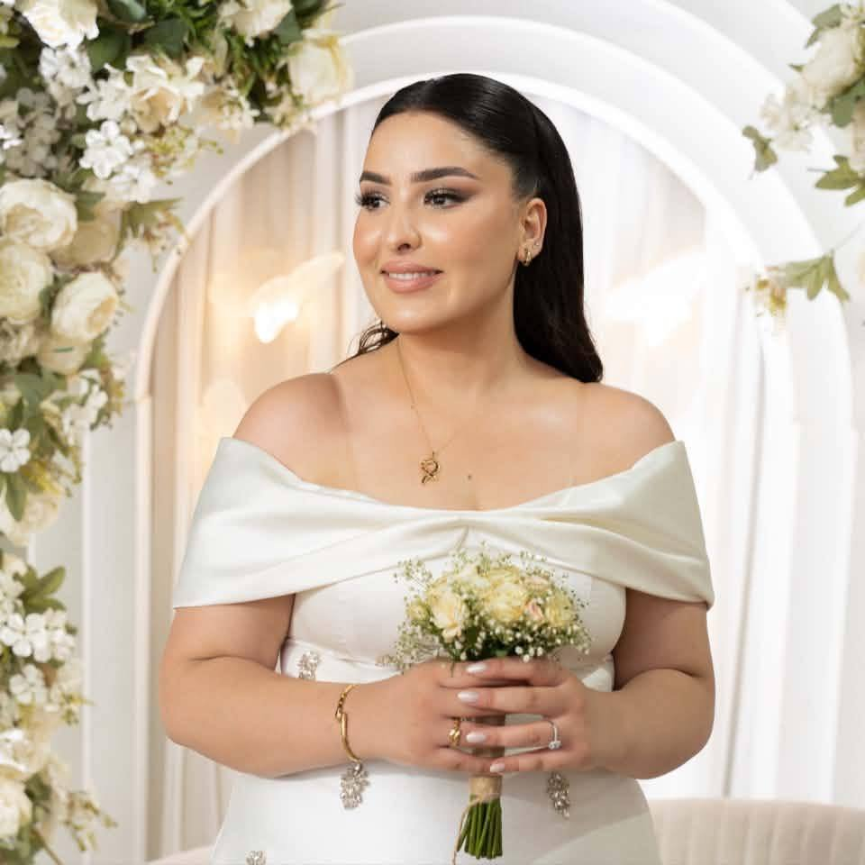

Creative Studio crafting cinematic brand experiences.
We help ambitious businesses turn complex ideas into clear, memorable visual identities and digital experiences.
Creative Director • Multimedia Designer
Leads creative direction, brand identity, and cinematic multimedia design across all studio projects.
Web Developer
Engineers responsive, modern web applications and interactive digital experiences with clean, performant code.

Business Development Manager
Drives strategic partnerships, client relationships, and business growth opportunities for WYRM.studios.
Marketing Manager
Oversees creative brand marketing campaigns, digital storytelling, and audience engagement strategies.
Graphic Designer
Crafts impactful visual assets, brand identity collateral, and modern design systems across digital and print media.
When you work with WYRM.studios, you get direct collaboration with our dedicated team of creative and technical specialists. Your project is crafted with high artistic standards, managed with care, and delivered with the precision of a studio that treats every brand like its own.
Our work focuses on turning complexity into cinematic clarity and strategic design.
Visual Storytelling
Started creating visual narratives and discovering the power of motion design.
Freelance Creative
Transitioned into full-time freelance brand identity and motion work.
Studio Expansion
Expanded capabilities to include full web design and development.
WYRM.studios
Operating as a full-service creative studio crafting brand identities, motion, and web experiences.